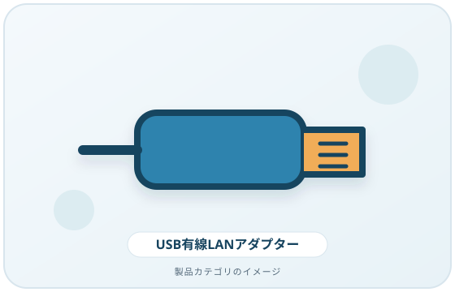
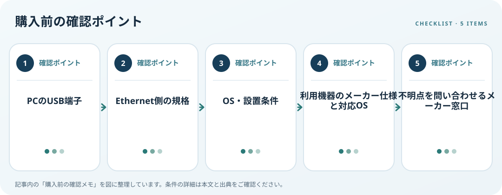

USB-LANアダプターは、USB側とEthernet側の両方が利用環境に合うかを確認して選びます。MicrosoftはPCにEthernet端子がない場合、USB-Ethernetアダプターを選択肢として挙げていますが、特定製品との互換性を保証する説明ではありません。PCの型番、OS、空きUSB端子、ルーターの接続端子を一緒に確認しましょう。
画像・ボタンはAmazonアソシエイトリンクです。適格購入により紹介料を得る場合があります。

Amazon.co.jpで「USB LAN アダプター」を探す ↗

対応条件を仕様で確認
直接接続かUSBハブ経由かを決め、PCのUSB-A／USB-Cの形状と仕様を調べます。Ethernet側はアダプター、LANケーブル、ルーターまたはスイッチの対応規格を個別に確認します。いずれかが異なる仕様なら、その構成で利用できる範囲も変わります。広告の最大速度だけから、契約回線や実効速度を推定しないでください。
利用環境・設置条件を確認
Windows以外のOSやARM搭載PCでは、メーカーが案内する対応OS、対応機種、ドライバー配布先を確認します。ケーブルを挿したままPCケースや机に干渉しないか、必要なケーブル長、LED表示、USBハブ利用時の注意も仕様表で照合します。わからない点は購入前にメーカーへ問い合わせます。
購入前の確認メモ
- PCのUSB端子
- Ethernet側の規格
- OS・設置条件
- 利用機器のメーカー仕様と対応OS
- 不明点を問い合わせるメーカー窓口
記事は出典の公開情報を確認手順に整理したもので、製品の使用・実測・ランキング・価格・在庫の調査は行っていません。購入時には各メーカーの最新情報をご確認ください。
出典
- Fix Ethernet connection problems in Windows — Microsoft Support（確認日: 2026-10-10）
- Update drivers through Device Manager in Windows — Microsoft Support（確認日: 2026-10-10）